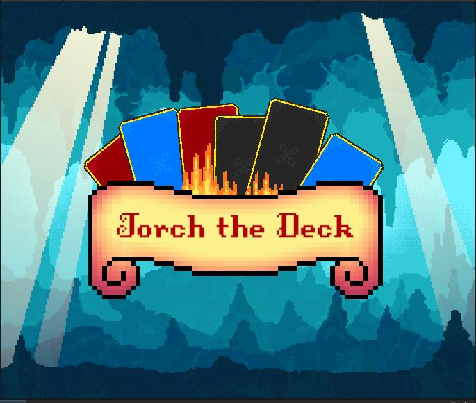

Torch the Deck
Description: This project is currently in progress as my senior capstone project. It is a game built in the Unity engine, designed in the roguelike deck-builder genre. The games core mechanics is that each card the player obtains can be used only once, creating interesting, meaningful gameplay that requires players to make difficulty choices about resource management.
Technologies Used: The project plans to use Unity engine, as well as external packages.
Challenges: [Challenges faced during development]
Outcome: [Final results and impact of the project]
View Source Code